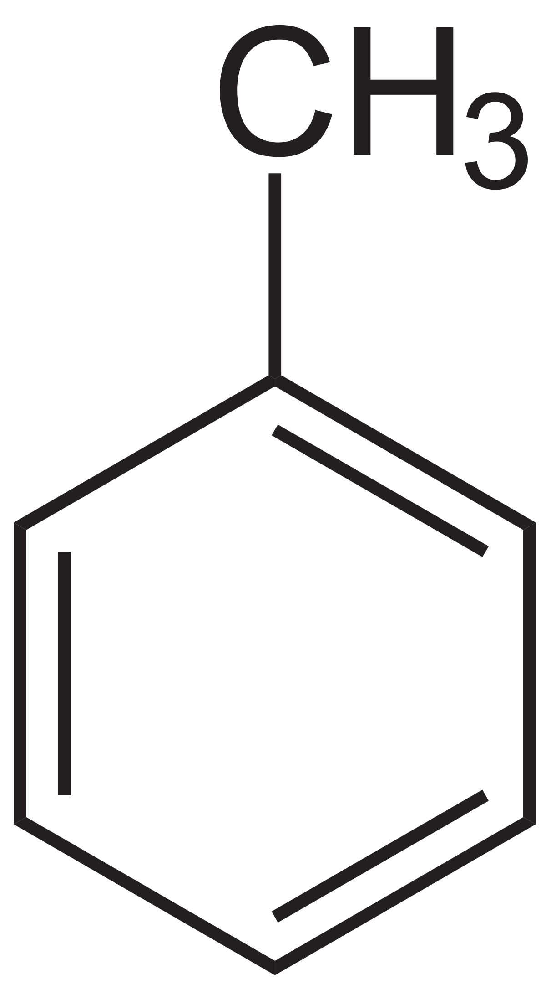
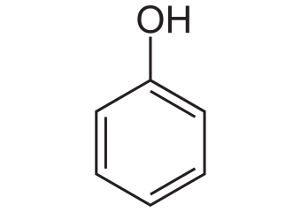
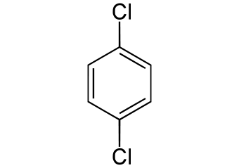

N omenclature
The Process

In general, benzene/aromatic compounds follow the same IUPAC rules discussed in the first alkanes portion of the portfolio. "Benzene" (or other suplimentary names discussed) replaces the base of the IUPAC name (where the alkane/alkyne/alkene named after the longest carbon chain was located). This is, of course, if the benzene is the longest carbon chain. If it is not, and it is instead a side chain, it will be placed before the base and named similar to how other IUPAC side chains are named (with the location of the side chain placed before the its name). If benzene is a side chain, it is given the name phenyl. There are, however some special naming conventions listed below:
 Toluene  Phenol Aniline Benzoic Acid
>Ortho (o) = 1,2 ringed side chains
>Meta (m) = 1,3 ringed side chains
>Para (p) = 1,4 ringed side chains
...-(# off the main chain)-(main chain carbon # prefix)(# of carbons in side chain prefix)yl(benzene [or alternative name])
...-1-ethylbenzene
(p)-dichlorobenzene
2-ethyltoluene (ethyl number is 2 since the special naming is based off the other side chain)
(m)-methylbenzoic acid
2,4-dimethyl-3-phenylpentane
B ack